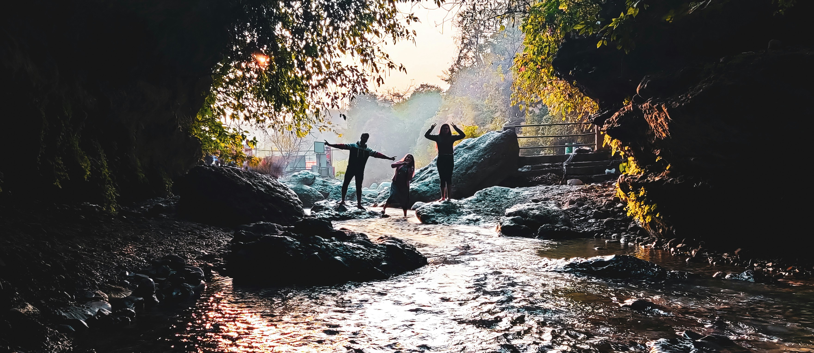
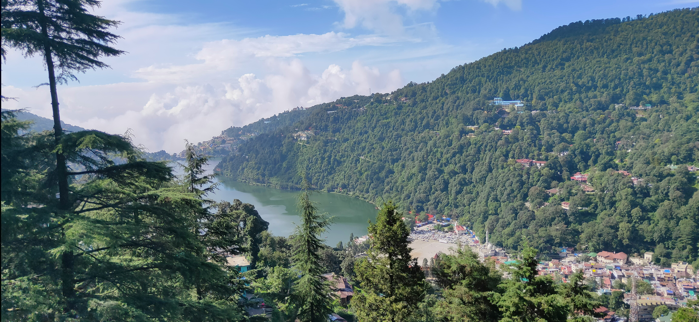
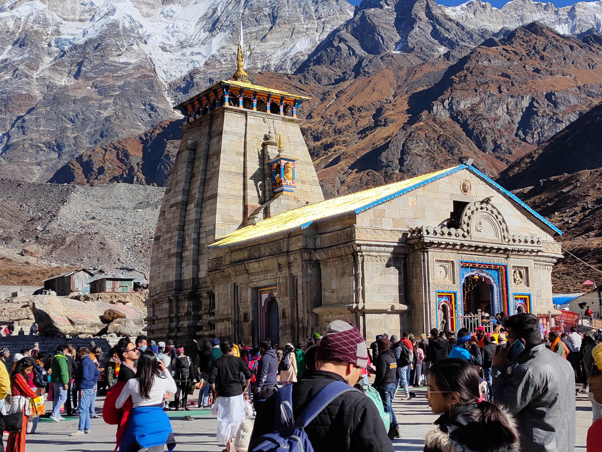
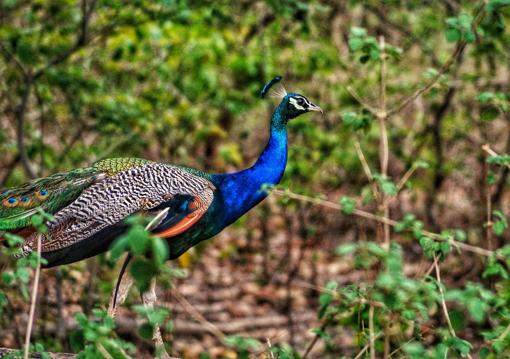
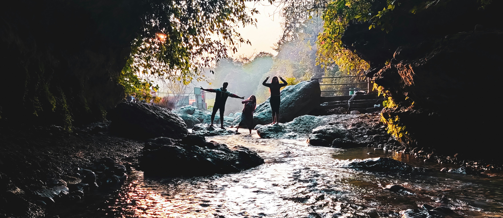
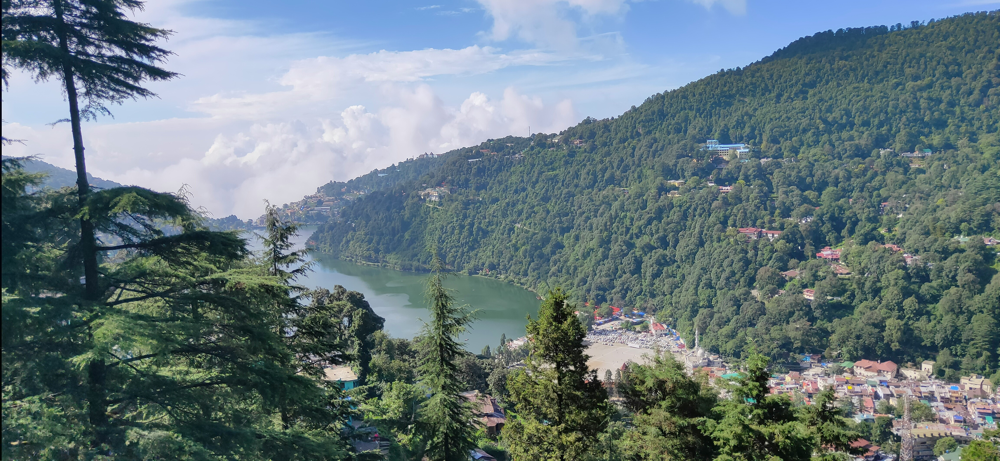
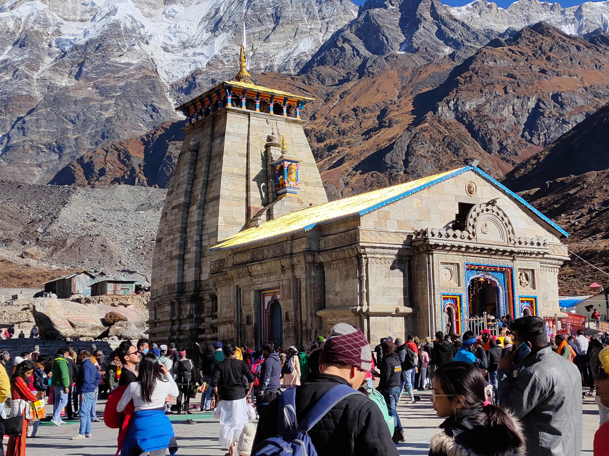
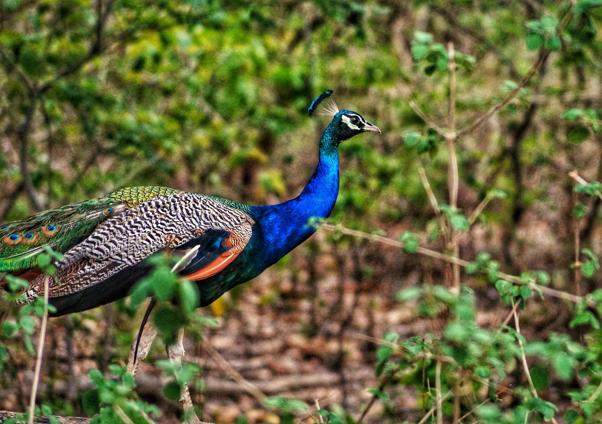

Information
Dehradun, the capital city of the Indian state of Uttarakhand, is a charming and picturesque destination
known for its natural beauty, pleasant climate, and historical significance. Here are some highlights of
Dehradun tourism:
1. Robber's Cave (Guchhupani):
This is a popular tourist spot where a stream
mysteriously
disappears
underground and reappears a few yards away. The cave is surrounded by hills and is a great place
for a
nature walk.
Located around 8 kilometers from the city center, Robber's Cave is a fascinating natural formation.
A river suddenly disappears underground and re-emerges a few hundred meters away, creating a unique
cave-like structure. Visitors can walk through the chilly water inside the cave, surrounded by
limestone formations. The picturesque surroundings and the intriguing geological features make it a
popular spot for nature lovers.

2. Sahastradhara:
Translating to "thousand-fold spring," Sahastradhara is famous
for its therapeutic
sulfur springs. The site is surrounded by caves and a lush landscape, making it a popular
destination
for
both locals and tourists. Translating to "thousand-fold spring," Sahastradhara is a breathtaking
waterfall known for its therapeutic properties due to the presence of sulfur springs. The water
contains minerals with medicinal value and is believed to have healing properties. The site is
surrounded by limestone caves and provides a serene environment for relaxation. There are also cable
cars available to enjoy panoramic views of the surroundings.

3. Tapkeshwar Temple:
This ancient temple dedicated to Lord Shiva is situated on the banks of the
Asan
River. The main shiva lingam in the cave is constantly bathed in water drops, giving the temple its
name,
"Tapkeshwar."
Situated on the banks of the Asan River, Tapkeshwar Temple is dedicated to Lord Shiva. The temple is
known for its unique lingam, constantly bathed in water droplets, giving it the name "Tapkeshwar" or
the 'Dripping Shiva.' Pilgrims and tourists visit to seek the blessings of Lord Shiva in the
tranquil and spiritual ambiance.

4. Forest Research Institute (FRI):
For those interested in forestry and natural resources, FRI is a
must-visit. The institute's architecture is noteworthy, and the lush greenery surrounding it adds to
its
appeal.
Established in 1906, FRI is a premier institution for forestry research and education. The main
building, built in Greco-Roman architecture, is an architectural marvel and is surrounded by vast
botanical gardens. Visitors can explore the museums within the institute, which showcase
forestry-related artifacts, models, and information about India's rich forest heritage.

5. Kedarnath:
One of the largest Buddhist centers in India, Mindrolling Monastery is
known
for its beautiful architecture, serene surroundings, and the Great Stupa, which is one of the
tallest
stupas
in Asia.
Located in the Clement Town area of Dehradun, Mindrolling Monastery is a Tibetan Buddhist monastery
known for its stunning architecture. The Great Stupa of Mindrolling, adorned with intricate carvings
and paintings, is a major attraction. The monastery complex also includes shrines, gardens, and
accommodation for monks. It provides a peaceful atmosphere for meditation and
reflection.

6. Malsi Deer Park:
This park is a perfect spot for nature lovers and wildlife enthusiasts. It's
home to
various species of deer, birds, and an artificial lake.
Situated at the foothills of the Shivalik Range, Malsi Deer Park is a zoological park and a popular
picnic spot. It houses various species of deer, Neelgai, and peacocks in a natural habitat. The park
also features a children's park and an artificial lake, making it an ideal destination for families
and wildlife enthusiasts.

7. Clock Tower (Rajpur Road):
The Clock Tower is a prominent landmark in the city and is surrounded
by
bustling markets. The Clock Tower is a prominent landmark in the city center and a bustling hub of
activity. Surrounded by markets and shops, it offers a glimpse into the local culture and lifestyle.
The marketplaces around the Clock Tower are known for traditional handicrafts, textiles, and local
cuisine.

8. Mussoorie:
Although not in Dehradun itself, the nearby hill station of Mussoorie is easily
accessible
and is a popular extension to a trip to Dehradun. Mussoorie offers breathtaking views of the
Himalayas
and
is known for its pleasant climate.It's a great place to experience the local culture and shop for
traditional
goods.Although not in Dehradun itself, Mussoorie is a popular hill station located around 35
kilometers away. Known as the "Queen of Hills," Mussoorie offers panoramic views of the Himalayas
and lush landscapes. The Mall Road, Kempty Falls, Gun Hill, and Camel's Back Road are among the many
attractions in Mussoorie.

9. Rajaji National Park:
Located near Dehradun, this national park is known for its diverse flora
and
fauna. It's a haven for wildlife enthusiasts and offers opportunities for jungle safaris.
Located on the outskirts of Dehradun, Rajaji National Park is a haven for nature and wildlife
enthusiasts. Spread across the Shivalik Range, the park is home to diverse flora and fauna,
including elephants, tigers, leopards, and numerous bird species. Safari options are available for
visitors to explore the natural beauty and wildlife within the park.

Dehradun's combination of natural beauty, cultural heritage, and adventure opportunities makes it a
well-rounded destination for tourists seeking a variety of experiences.
1. Robber's Cave (Guchhupani):
This is a popular tourist spot where a stream mysteriously disappears underground and reappears a few yards away. The cave is surrounded by hills and is a great place for a nature walk. Located around 8 kilometers from the city center, Robber's Cave is a fascinating natural formation. A river suddenly disappears underground and re-emerges a few hundred meters away, creating a unique cave-like structure. Visitors can walk through the chilly water inside the cave, surrounded by limestone formations. The picturesque surroundings and the intriguing geological features make it a popular spot for nature lovers.

2. Sahastradhara:
Translating to "thousand-fold spring," Sahastradhara is famous for its therapeutic sulfur springs. The site is surrounded by caves and a lush landscape, making it a popular destination for both locals and tourists. Translating to "thousand-fold spring," Sahastradhara is a breathtaking waterfall known for its therapeutic properties due to the presence of sulfur springs. The water contains minerals with medicinal value and is believed to have healing properties. The site is surrounded by limestone caves and provides a serene environment for relaxation. There are also cable cars available to enjoy panoramic views of the surroundings.

3. Tapkeshwar Temple:
This ancient temple dedicated to Lord Shiva is situated on the banks of the Asan River. The main shiva lingam in the cave is constantly bathed in water drops, giving the temple its name, "Tapkeshwar." Situated on the banks of the Asan River, Tapkeshwar Temple is dedicated to Lord Shiva. The temple is known for its unique lingam, constantly bathed in water droplets, giving it the name "Tapkeshwar" or the 'Dripping Shiva.' Pilgrims and tourists visit to seek the blessings of Lord Shiva in the tranquil and spiritual ambiance.
4. Forest Research Institute (FRI):
For those interested in forestry and natural resources, FRI is a must-visit. The institute's architecture is noteworthy, and the lush greenery surrounding it adds to its appeal. Established in 1906, FRI is a premier institution for forestry research and education. The main building, built in Greco-Roman architecture, is an architectural marvel and is surrounded by vast botanical gardens. Visitors can explore the museums within the institute, which showcase forestry-related artifacts, models, and information about India's rich forest heritage.
5. Kedarnath:
One of the largest Buddhist centers in India, Mindrolling Monastery is known for its beautiful architecture, serene surroundings, and the Great Stupa, which is one of the tallest stupas in Asia. Located in the Clement Town area of Dehradun, Mindrolling Monastery is a Tibetan Buddhist monastery known for its stunning architecture. The Great Stupa of Mindrolling, adorned with intricate carvings and paintings, is a major attraction. The monastery complex also includes shrines, gardens, and accommodation for monks. It provides a peaceful atmosphere for meditation and reflection.

6. Malsi Deer Park:
This park is a perfect spot for nature lovers and wildlife enthusiasts. It's home to various species of deer, birds, and an artificial lake. Situated at the foothills of the Shivalik Range, Malsi Deer Park is a zoological park and a popular picnic spot. It houses various species of deer, Neelgai, and peacocks in a natural habitat. The park also features a children's park and an artificial lake, making it an ideal destination for families and wildlife enthusiasts.
7. Clock Tower (Rajpur Road):
The Clock Tower is a prominent landmark in the city and is surrounded by bustling markets. The Clock Tower is a prominent landmark in the city center and a bustling hub of activity. Surrounded by markets and shops, it offers a glimpse into the local culture and lifestyle. The marketplaces around the Clock Tower are known for traditional handicrafts, textiles, and local cuisine.
8. Mussoorie:
Although not in Dehradun itself, the nearby hill station of Mussoorie is easily accessible and is a popular extension to a trip to Dehradun. Mussoorie offers breathtaking views of the Himalayas and is known for its pleasant climate.It's a great place to experience the local culture and shop for traditional goods.Although not in Dehradun itself, Mussoorie is a popular hill station located around 35 kilometers away. Known as the "Queen of Hills," Mussoorie offers panoramic views of the Himalayas and lush landscapes. The Mall Road, Kempty Falls, Gun Hill, and Camel's Back Road are among the many attractions in Mussoorie.
9. Rajaji National Park:
Located near Dehradun, this national park is known for its diverse flora and fauna. It's a haven for wildlife enthusiasts and offers opportunities for jungle safaris. Located on the outskirts of Dehradun, Rajaji National Park is a haven for nature and wildlife enthusiasts. Spread across the Shivalik Range, the park is home to diverse flora and fauna, including elephants, tigers, leopards, and numerous bird species. Safari options are available for visitors to explore the natural beauty and wildlife within the park.
